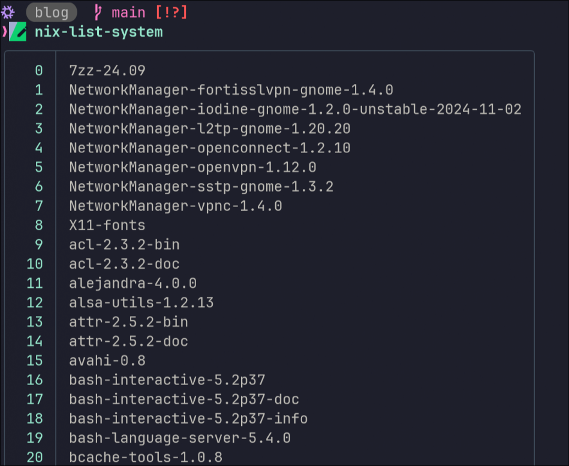

Chapter 12

Intro to Nushell on NixOS
-
TL;DR:I recently switched default shells from zsh to nushell, this post is about some of the challenges and advantages of using nushell with NixOS.
-
While the average user might not immediately see significant advantages, those who frequently work with structured data formats like JSON, YAML, and CSV – such as developers interacting with APIs, system administrators managing configurations, and data professionals – will likely find Nushell's native data handling and powerful pipeline capabilities a plus. Additionally, users who value a more consistent and safer scripting experience might appreciate Nushell's language-first design and features like strong typing.
-
I'll start with some of the unique build design choices and unique features that I think make Nushell special, then show an example using Nushell to manipulate JSON data. Finally, I will highlight some of the visually appealing aspects of Nushell and lastly I share some resources for learning more.
The Good
-
Nushell borrows concepts from many shells and languages and is itself both a programming language and a shell. Because of this, it has its own way of working with files, directories, websites, and more.
-
Nushell is powerful and has many essential commands built directly into the shell ("internal" commands) rather than a link to an executable. You can use this set of commands across different operating systems, having this consistency is helpful when creating cross-platform code.
-
When internal Nushell commands (like
ls,open,where,get,sort-by, etc.) produce output, they generally do so in Nushell's structured data format (tables or records). This is the shell's native way of representing information. -
Beyond these foundational strengths, Nushell offers a range of unique features that enhance its functionality and make it particularly well-suited for data-heavy tasks. Here are some highlights that showcase its versatility.
Some Unique Features:
-
Besides the built-in commands, Nushell has a standard library Nushell operates on structured data. You could call it a "data-first" shell and programming language.
-
Also included, is a full-featured dataframe processing engine using Polars if you want to process large data efficiently directly in your shell, check out the Dataframes-Docs
-
Multi-Line Editing:
-
When writing a long command you can press Enter to add a newline and move to the next line. For example:
ls | # press enter
where name =~ | # press enter, comments after pipe ok
get name | # press enter
mv ...$in ./backups/
-
This allows you to cycle through the entire multi-line command using the up and down arrow keys and then customize different lines or sections of the command.
-
You can manually insert a newline using
Alt+EnterorShift+Enter. -
The Reedline-Editor is powerful and provides good
vi-modeoremacssupport built in. -
It's default
Ctrl+rhistory command is nice to work with out of the box. -
The explore command, is nu's version of a table pager, just like
lessbut for table structured data:
$nu | explore --peek
-
With the above command you can navigate with vim keybinds or arrow keys.
-
These features demonstrate Nushell’s user-friendly interface, but what truly sets it apart is its underlying design as a structured data scripting language. This “language-first” approach powers many of its distinctive capabilities.

Unique design:
-
Fundamentally designed as a structured data scripting language: and then it acts as a shell on top of that foundation. This "language first" approach is what gives it many of its distinctive features and makes it a powerful scripting language. I reiterate this here because of the implications of this. A few of those features are:
-
Pipelines of structured data: Unlike traditional shells that primarily deal with plain text streams, Nushell pipelines operate on tables of structured data. Each command can understand and manipulate this structured data directly.
-
Consistent syntax: Its syntax is more consistent and predictable compared to the often quirky syntax of Bash and Zsh, drawing inspiration from other programming languages.
-
Strong typing Nushell has a type system, which helps catch errors early and allows for more robust scripting.
-
First-class data types: It treats various data formats (like JSON, CSV, TOML) as native data types, making it easier to work with them. Because of this, Nushell aims to replace the need for external tools like
jq,awk,sed,cut, and even some uses ofgrepandcurl.
-
-
Variables are Immutable by Default: Nushell's commands are based on a functional-style of programming which requires immutability, sound familiar?
-
Nushell's Environment is Scoped: Nushell takes many design cues from compiled languages, one is that languages should avoid global mutable state. Shells have commonly used global mutation to update the environment, Nushell attempts to steer clear of this increasing reproducability.
-
Single-use Environment Variables:
FOO=BAR $env.FOO
# => BAR
- Permanent Environment Variables: In your
config.nu
# config.nu
$env.FOO = 'BAR'
-
These design principles make Nushell a powerful tool for scripting, but they’re best understood through a hands-on example. Let’s see how Nushell’s structured data capabilities shine in a common task: processing a JSON file.
Example: I wanted to provide a practical example to illustrate some of these "Good" features in action. And break it down for better understanding.
-
Let's consider a common task: processing data from a JSON file. Imagine you have a file containing a list of users with their names and ages. With traditional shells, you'd likely need to rely on external tools like
jqto parse and filter this data. However, Nushell can handle this directly within its own commands. -
For this example you could create a
testdirectory and move to it:
mkdir test ; cd test
- Create a
users.jsonwith the following contents:
[
{ "name": "Alice", "age": 25 },
{ "name": "Bob", "age": 30 },
{ "name": "Charlie", "age": 20 }
]
- And create the following
filter.nuthat first convertsusers.jsoninto its own internal structured data format with theopencommand, then to filters out people under21with thewherecontrol flow construct, then selects thenameandagecolumns, sorts them by age, and finally converts them back tojsonand saves them to a file calledfiltered_users.json. A lot happening in a 6 line script.
open users.json # Read JSON file into structured data
| where age > 21 # Filter users older than 21
| select name age # Select only name and age columns
| sort-by age # Sort by age
| to json # Convert back to JSON
| save filtered_users.json # Save result to a new file
- The
opencommand takes data from a file (or even a URL in some cases) and parses it and converts it into Nushells own internal structured data format. So this command isn't just showing you the contents ofusers.jsonbut doing a conversion to Nu's special structured format.
open users.json
╭───┬─────────┬─────╮
│ # │ name │ age │
├───┼─────────┼─────┤
│ 0 │ Alice │ 25 │
│ 1 │ Bob │ 30 │
│ 2 │ Charlie │ 20 │
╰───┴─────────┴─────╯
- The
sourcecommand in Nushell is used to execute the commands within a script file (likefilter.nu) in the current Nushell environment. It's similar to running the script directly in the shell, but keeps the shell open for further use. In this example,source filter.nuruns the commands insidefilter.nu, processing theusers.jsonfile and creating thefiltered_users.jsonfile:
source filter.nu
bat filtered_users.json
───────┬──────────────────────────────────────────────────────────────────────────────────────
│ File: filtered_users.json
───────┼──────────────────────────────────────────────────────────────────────────────────────
1 │ [
2 │ {
3 │ "name": "Alice",
4 │ "age": 25
5 │ },
6 │ {
7 │ "name": "Bob",
8 │ "age": 30
9 │ }
10 │ ]
───────┴───────────────────────────────────────────────────────────────────────────────────
- As you can see, without needing any external tools, Nushell was able to read, filter, select, sort, and then re-serialize JSON data using a clear and concise pipeline. This demonstrates its power in handling structured data natively, making common data manipulation tasks within the shell significantly more streamlined and readable compared to traditional approaches.
In the filter.nu example:
open users.json # Read JSON file into structured data
| where age > 21 # Filter users older than 21
| select name age # Select only name and age columns
| sort-by age # Sort by age
| to json # Convert back to JSON
| save filtered_users.json # Save result to a new file
✔️ Summary of above Command (Click to Expand)
-
open users.json: Produces a Nushell table representing the data. -
| where age > 21: Receives the table, filters rows based on theagecolumn, and outputs a new, filtered table. -
| select name age: Receives the filtered table, selects only thenameandagecolumns, and outputs a table with fewer columns. -
| sort-by age: Receives the table, sorts the rows based on theagecolumn, and outputs a sorted table. -
| to json: Receives the sorted table and converts it back into JSON text. -
| save filtered_users.json: Receives the JSON text and saves it to a file.
-
So, while the concept of piping is the same, the nature of the data flowing through the Nushell pipeline is richer and more structured, enabling more powerful and direct data manipulation.
-
While Nushell’s strengths, like its structured data pipelines, make it a game-changer for many tasks, it’s not without its challenges, especially when integrated with NixOS’s Bash-centric ecosystem. Let’s explore some of the limitations you might encounter when adopting Nushell as your default shell.
The Bad
-
While the project is still maturing, the active community and ongoing improvements are promising. Don't get too discouraged by the following, there would be a bad section for any shell imo.
-
There are many similarities so it can be easy to forget that some Bash (and POSIX in general) style constructs just won't work in Nushell. Considering that NixOS seems to have been designed for bash, even Zsh isn't fully compatable you may want to think twice before you choose Nushell as your default.
-
The documentation is incomplete and written by devs for devs imo, it is quite a bit different from anything else I've seen so there is a bit of a learning curve. Nushell is generally still considered to be in a stage where it might not be the most seamless or trouble-free experience as a daily driver default shell for most users, especially on a system like NixOS known for its unique approach.
-
The any-nix-shell project doesn't include Nushell as with many others because of it's lack of maturity.
-
The following addition comes from Joey_McKur's sugggestion, on mentioning the
jobcommand as one of the biggest criticisms against Nu because it doesn't support background tasks. I should also note that Nushell's team is aware of these criticisms and actively working on improving job control.
Limited Feature Set Compared to Traditional Job Control:
-
Lack of Full POSIX Job Control: Nushell's job control doesn't yet fully implement all the features and signals defined by POSIX job control (e.g., more nuanced signal handling, stopped jobs). While it covers the basics, users accustomed to advanced Bash job control might find it lacking.
-
Foregrounding Behavior: There have been criticisms about how foregrounding jobs interacts with the terminal and potential issues with signal propagation.
Output Handling Challenges:
-
Interleaved Output: Managing the output of multiple backgrounded jobs can sometimes be messy, with output from different jobs potentially interleaving in the terminal. While Nushell tries to handle this, it's not always as clean as desired.
-
Redirection Complexity: Redirecting the input and output of backgrounded jobs can be less straightforward than in Bash, sometimes requiring more explicit handling.
Integration with Pipelines:
- Backgrounding Pipelines: Backgrounding complex pipelines with multiple stages can sometimes lead to unexpected behavior or difficulties in managing the entire pipeline as a single job.
Error Reporting:
-
Difficult to Track Errors in Background Jobs: Identifying and debugging errors in backgrounded jobs can be less direct than with foreground processes, and the job command's output might not always provide sufficient information for troubleshooting.
-
Many of Nushell’s challenges stem from its departure from traditional shell conventions, particularly those of Bash, which NixOS heavily relies on. To better understand these differences and how they impact your workflow, let’s compare Nushell’s static, structured approach to Bash’s dynamic, text-based model.
Key Differences Between Nushell & Bash
| Feature | Bash (Dynamic) | Nushell (Static) |
|---|---|---|
| Code Execution | Line-by-line | Whole script parsed first |
| Error Detection | Runtime errors only | Catches errors before running |
Support for eval | ✅ Allowed | ❌ Not supported |
| Custom Parsing | Limited | Built-in semantic analysis |
| IDE Features | Basic syntax highlighting | Advanced integration, linting, and formatting |
-
&&doesn't work use;instead. -
>is used as the greater-than operator for comparisons:
"hello" | save output.txt
is equivalent to the following in bash:
echo "hello" > output.txt
- If you notice above the nushell command doesn't require an
echoprefix, this is because Nushell has Implicit Return:
"Hello, World" == (echo "Hello, World")
# => true
-
The above example shows that the string,
"Hello, World"is equivalent to the output value fromecho "Hello, World" -
Every Command Returns a Value:
let p = 7
print $p # 7
$p * 6 # 42
- Understanding these differences highlights why Nushell feels so distinct from Bash, but it’s the shell’s advanced features and integrations that truly make it shine. Let’s dive into some of the beautiful and powerful tools and custom commands that elevate Nushell for NixOS users.
The Beautiful and Powerful
-
Ctrl+tList Commands with carapace and fzf:
-
CarapaceCarapace-Bin Install:
-
Carapaceman example:
Custom Nushell Commands
- The following command allows you to choose which input to update interactively with fzf.
✔️ Click to See Command
# nix.nu
# upgrade system packages
# `nix-upgrade` or `nix-upgrade -i`
def nix-upgrade [
flake_path: string = "/home/jr/flake", # path that contains a flake.nix
--interactive (-i) # select packages to upgrade interactively
]: nothing -> nothing {
let working_path = $flake_path | path expand
if not ($working_path | path exists) {
echo "path does not exist: $working_path"
exit 1
}
let pwd = $env.PWD
cd $working_path
if $interactive {
let selections = nix flake metadata . --json
| from json
| get locks.nodes
| columns
| str join "\n"
| fzf --multi --tmux center,20%
| lines
# Debug: Print selections to verify
print $"Selections: ($selections)"
# Check if selections is empty
if ($selections | is-empty) {
print "No selections made."
cd $pwd
return
}
# Use spread operator to pass list items as separate arguments
nix flake update ...$selections
} else {
nix flake update
}
cd $pwd
nh os switch $working_path
}

- The
nscommand is designed to search for Nix packages usingnix searchand present the results in a cleaner format, specifically removing the architecture and operating system prefix that nix search often includes.
✔️ Click To Expand
def ns [
term: string # Search target.
] {
let info = (
sysctl -n kernel.arch kernel.ostype
| lines
| {arch: ($in.0|str downcase), ostype: ($in.1|str downcase)}
)
nix search --json nixpkgs $term
| from json
| transpose package description
| flatten
| select package description version
| update package {|row| $row.package | str replace $"legacyPackages.($info.arch)-($info.ostype)." ""}
}

nufetchcommand:
✔️ Click To Expand
# `nufetch` `(nufetch).packages`
def nufetch [] {
{
"kernel": $nu.os-info.kernel_version,
"nu": $env.NU_VERSION,
"packages": (ls /etc/profiles/per-user | select name | prepend [[name];
["/run/current-system/sw"]] | each { insert "number" (nix path-info --recursive
($in | get name) | lines | length) | insert "size" ( nix path-info -S
($in | get name) | parse -r '\s(.*)' | get capture0.0 | into filesize) | update
"name" ($in | get name | parse -r '.*/(.*)' | get capture0.0 | if $in == "sw"
{"system"} else {$in}) | rename "environment"}),
"uptime": (sys host).uptime
}
}

dufcommand, I have mine aliased todf:

pscommand:

- Adding the following to your
configuration.nixwill show you the diff of the closures on rebuild:
✔️ Click To Expand
# configuration.nix
# During system activation, compare the closure size difference between the
# current and new system and display a formatted table if significant changes are
# detected.
system.activationScripts.diff = ''
if [[ -e /run/current-system ]]; then
${pkgs.nushell}/bin/nu -c "let diff_closure = (${pkgs.nix}/bin/nix store
diff-closures /run/current-system '$systemConfig'); let table =
(\$diff_closure | lines | where \$it =~ KiB | where \$it =~ → | parse -r
'^(?<Package>\S+): (?<Old>[^,]+)(?:.*) → (?<New>[^,]+)(?:.*), (?<DiffBin>.*)$'
| insert Diff { get DiffBin | ansi strip | into filesize } | sort-by -r Diff
| reject DiffBin); if (\$table | get Diff | is-not-empty) { print \"\"; \$table
| append [[Package Old New Diff]; [\"\" \"\" \"\" \"\"]] | append [[Package Old
New Diff]; [\"\" \"\" \"Total:\" (\$table | get Diff | math sum) ]]
| print; print \"\" }"
fi
'';

nix-list-systemcommand lists all installed packages:
# list all installed packages
def nix-list-system []: nothing -> list<string> {
^nix-store -q --references /run/current-system/sw
| lines
| filter { not ($in | str ends-with 'man') }
| each { $in | str replace -r '^[^-]*-' '' }
| sort
}

- These custom Nushell commands showcase its flexibility, but sometimes you need
to work around Nushell’s limitations, like compatability with certain NixOS
tools. This is where
justandjustfilescome in, simplifying complex workflows and bridging gaps in Nushell’s functionality.
Using Just and Justfiles
-
The following is my
justfilethat I keep right next to myflake.nixit simplifies some commands and makes things work that weren't working with nushell for my case, you'll have to change it to match your configuration. It's not perfect but works for my use case, take whats useful and leave the rest. -
You'll first need to install just to make use of
justfiles.
# nix shell nixpkgs#just nixpkgs#nushell
set shell := ["nu", "-c"]
flake_path := "/home/jr/flake"
hostname := "magic"
home_manager_output := "jr@magic"
utils_nu := absolute_path("utils.nu")
default:
@just --list
# Rebuild
[group('nix')]
fr:
nh os switch --hostname {{hostname}} {{flake_path}}
# Flake Update
[group('nix')]
fu:
nh os switch --hostname {{hostname}} --update {{flake_path}}
# Update specific input
# Usage: just upp nixpkgs
[group('nix')]
upp input:
nix flake update {{input}}
# Test
[group('nix')]
ft:
nh os test --hostname {{hostname}} {{flake_path}}
# Collect Garbage
[group('nix')]
ncg:
nix-collect-garbage --delete-old ; sudo nix-collect-garbage -d ; sudo /run/current-system/bin/switch-to-configuration boot
[group('nix')]
cleanup:
nh clean all
- To list available commands type, (you must be in the same directory as the
justfile):
just

-
So
just fmtwill runnix fmt. -
A lot of the
.nufiles came from this repo by BlindFS:-
modern-dot-files he uses Nix Darwin so there are a few changes for NixOS. I found this through this_week_in_nu.
-
The examples use this starship configAylur-dotfiles The logic on the bottom enables starship for Nushell, Zsh, and Bash!
-
If you wan't to use my config you'll have to enable the experimental-feature
pipe-operatorsin the same place you enable flakes and nix-command.
-
-
There are still situations where I need to switch to zsh or bash to get something to work i.e.
nix-shelland a few others. -
From custom commands to
justfileintegrations, Nushell offers a wealth of tools to enhance your NixOS experience, even if occasional workarounds are needed. To dive deeper into Nushell and tailor it to your needs, here are some valuable resources to explore, from official documentation to community-driven configurations.
Resources
✔️ Click to Expand Resources
-
nu_scripts some of the custom commands came from here.
-
discord You can find custom commands, configurations, etc here.